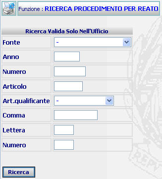

GENERALITA'
RICERCA PROCEDIMENTO PER REATO:
La funzione consente di operare ricerche di procedimenti,
filtrati per tipologia di reato,
negli Uffici Esecuzione di Procura o di Procura Generale.
N.B.
la ricerca viene effettuata nel solo ufficio di appartenenza.
LE MASCHERE VIDEO
La funzione in
esame viene realizzata attraverso l'utilizzo della seguente maschera
che
riporta gli elementi
descrittivi
del reato:

COME FARE PER ...
Per ricercare
i procedimenti, associati a determinati reati,
l'utente deve:
-
Posizionarsi sulla
scheda di Ricerca;
-
Introdurre i dati
per i quali si vuole effettuare la ricerca tenendo presente che il
campo "Fonte" è obbligatorio
-
Confermare i dati inseriti nella maschera agendo sul bottone
 . Se
il sistema riscontra la presenza nell'intervallo selezionato di un
solo procedimento, allora viene visualizzata la maschera di
dettaglio procedimento SIEP,
se invece riscontra la presenza di più procedimenti, allora viene
visualizzata la maschera lista
procedimento per numero SIEP contenente la lista dei
procedimenti trovati
. Se
il sistema riscontra la presenza nell'intervallo selezionato di un
solo procedimento, allora viene visualizzata la maschera di
dettaglio procedimento SIEP,
se invece riscontra la presenza di più procedimenti, allora viene
visualizzata la maschera lista
procedimento per numero SIEP contenente la lista dei
procedimenti trovati
CAMPI
I
dati che
consentono di
ricercare un utente sono i seguenti: